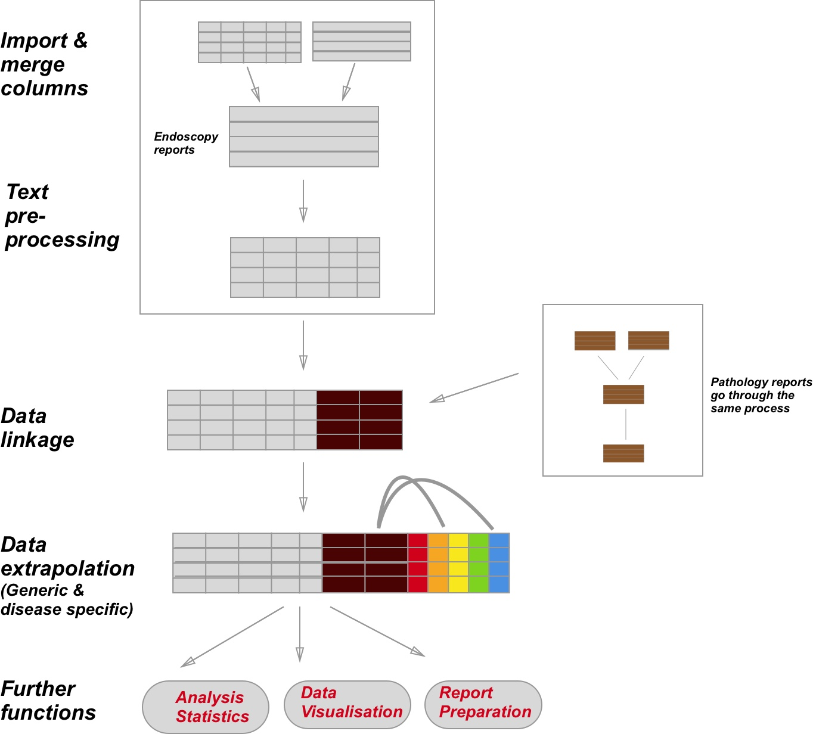

This package has undergone a major revision to make it much more user friendly. THe documentation has been updated to reflect this. I am always happy to hear of any feedback, positive and negative so I can continue to improve this package.
Aims of EndoMineR
The goal of EndoMineR is to extract as much information as possible from free or semi-structured endoscopy reports and their associated pathology specimens.
Gastroenterology now has many standards against which practice is measured although many reporting systems do not include the reporting capability to give anything more than basic analysis. Much of the data is locked in semi-structured text. However the nature of semi-structured text means that data can be extracted in a standardised way- it just requires more manipulation.
This package provides that manipulation so that complex endoscopic-pathological analyses, in line with recognised standards for these analyses, can be done.
How is the package divided?

The package is basically divied into three parts. How all the functions are connected in shown in the figure above. The import of the raw data is left up to the user with the overall aim being that all the data is present in one dataframe.
Installation
You can install EndoMineR from github with:
# install.packages("devtools")
devtools::install_github("sebastiz/EndoMineR")If you dont have access to github, then download the zip and change the working dirctory to the place you have downloaded it, then do
setwd("C:/Users/Desktop/")
#On windows you cand cd to change the directory or us pushd to create a temporary directory indtead of cd and then setwd to the temporary directory
unzip("EndoMineR.zip")
file.rename("EndoMineR.zip-master", "EndoMineR.zip")
shell("R CMD build EndoMineR.zip")
#Then install the resulting tarball with:
install.packages("EndoMineR_0.2.0.9000.tar.gz", repos = NULL)1. Extraction and cleaning
If using raw reports, then once you have imported the data into your R environment, you can go ahead and use the textPrep function. If you have pre-segregated data, then use the EndoPaste function. This basically reformats your data so that everything is merged back into a raw text file, but it keeps the column headers as delimiters for use later.
EndoPaste is provided as an optional function to get your data in the right shape to allow EndoMineR to process the data properly.
EndoPaste outputs the data as well as a list of delimiters (basically your column headings). The delimiters can then be used in the textPrep function. This would work as follows:
#An example dataset
testList<-structure(list(PatientName = c("Tom Hardy", "Elma Fudd", "Bingo Man"),
HospitalNumber = c("H55435", "Y3425345", "Z343424"), Text = c("All bad. Not good",
"Serious issues", "from a land far away")), class = "data.frame", row.names = c(NA, -3L))
myReadyDataset<-EndoPaste(testList)The dataframe can be obtained from myReadyDataset
1
and the delimiters from myReadyDataset
2
Once the data is ready you can use the textPrep function. This function is really a wrapper for a number of different functions that work on your data.
a. Dusting the data
Firstly the data is cleaned up so that extra newlines, spaces, unnecessary punctuation etc is dealt with. Although you dont need to know the details of this, if you want to look under the hood you can see that this is part of the ColumnCleanUp function.
b. Spell checking
The textPrep also implements a spell checker (the spellCheck function). This really checks the spelling of gastroenterology terms that are present in the in-built lexcicons. So if for example the report contains the terms ‘Radiafrequency ablashion’ then this will be corrected using Radiofrequency ablation. This is one function that acts to standardise the text in the report so that downstream analyses can be robust.
c. Negative phrase removal
The text is then passed along to the NegativeRemove function. This will remove any phrases that contain negative sentences indicating a non-positive finding. For example it would remove ‘There is no evidence of dysplasia here’. This makes text extraction analyses, which often report the detection of a positive finding, much more accurate. If you wish to include these types of phrases however, you can. This function is part of the parameters you can switch on and off for the textPrep function.
d. Term mapping
The next step is to perform term mapping. This means that variations of a term are all mapped to a single common term. For example ‘RFA’ and ‘HALO’ may be both mapped to ‘Radiofrequency ablation’. This is performed using the using the DictionaryInPlaceReplace function. This function looks through all of the lexicons included in this package to perform this. The lexicons are all manually created and consist of key-value pairs which therefore map a key 9which is the term variant) to a value (which is the standardised term that should be used).
e. Segregating the data
Finally the text is ready to separate into columns. The basic Extractor function will take your data and the list of terms you have supplied that act as the column boundaries, the separate your data accordingly. There are a couple of options here. If you think the headers for your text vary a little bit, then you can change the parameter in the textPrep function to use an alternatiuve Extractor, called Extractor2 that can deal with this. It can be worth experimenting with your data to find out which is the better segregator. The Extractor (or Extractor2) is a very useful function. Different hospitals will use different software with different headings for endoscopic reports. The Extractor allows the user to define the separations in a report so that all reports can be automatically placed into a meaningful dataframe for further cleaning. Here we use the in-built datasets as part of the package. A list of keywords is then constructed. This list is made up of the words that will be used to split the document. It is very common for individual departments in both gastroenterology and pathology to use semi-structured reporting so that the same headers are used between patient reports. The list is therefore populated with these headers as defined by the user. The Extractor then does the splitting for each pair of words, dumps the text between the delimiter in a new column and names that column with the first keyword in the pair with some cleaning up and then returns the new dataframe.
Here we use an example dataset (which has not had separate columns selected already) as the input:
| PathReportWhole |
|---|
| Hospital: Random NHS Foundation Trust Hospital Number: H2890235 Patient Name: al-Bilal, Widdad DOB: 1922-05-04 General Practitioner: Dr. Mondragon, Amber Date received: 2002-11-10 Clinical Details: Previous had serrated lesions ?,If looks more like UC, please provide Nancy severity index 3 specimen. Nature of specimen: Nature of specimen as stated on pot = ‘Ascending colon x2’|,Nature of specimen as stated on request form = ‘rectum’|,Nature of specimen as stated on pot = ‘4X LOWER, 4X UPPER OESOPHAGUS’|,Nature of specimen as stated on pot = ‘rectal polyp’| Macroscopic description: 1 specimens collected the largest measuring 3 x 5 x 2 mm and the smallest 3 x 5 x 5 mm Histology: The appearances are of a hyperplastic polyp.,8 pieces of tissue, the largest measuring 4 x 36 x 2 mm and the smallest 3 x 3.,Completeness of excision is uncertain as the base is not clearly visualised.,There is no ulceration.,Kikuchi level: sm2. Diagnosis: Colon, biopsy - Normal.,- Focal granulomatous inflammation, non-necrotising.,Duodenum, biopsy - within normal histological limits.,Sigmoid colon, polypectomy: - Tubular adenoma with moderate dysplasia.,- Hyperplastic polyp .,Caecum polyp biopsies:- tubular adenoma, low grade dysplasia.,- Mild chronic inflammation within the oesophageal mucosa.,Sigmoid colon biopsies:- normal mucosa.,Sigmoid polyp excision:- tubular adenoma. |
We can then define the list of delimiters that will split this text into separate columns, title the columns according to the delimiters and return a dataframe. each column simply contains the text between the delimiters that the user has defined. These columns are then ready for the more refined cleaning provided by subesquent functions.
library(EndoMineR)
mywords<-c("Hospital Number","Patient Name:","DOB:","General Practitioner:",
"Date received:","Clinical Details:","Macroscopic description:",
"Histology:","Diagnosis:")
PathDataFrameFinalColon3<-Extractor(PathDataFrameFinalColon2$PathReportWhole,mywords)
#PathDataFrameFinalColon3<-head(PathDataFrameFinalColon3[2:10],1)
panderOptions('table.split.table', Inf)
pander(head(PathDataFrameFinalColon3[,1:9],1))| HospitalNumber | PatientName | DOB | GeneralPractitioner | Datereceived | ClinicalDetails | Macroscopicdescription | Histology | Diagnosis |
|---|---|---|---|---|---|---|---|---|
| : H2890235 | al-Bilal, Widdad | 1922-05-04 | Dr. Mondragon, Amber | 2002-11-10 | Previous had serrated lesions ?,If looks more like UC, please provide Nancy severity index 3 specimen. Nature of specimen: Nature of specimen as stated on pot = ‘Ascending colon x2’|,Nature of specimen as stated on request form = ‘rectum’|,Nature of specimen as stated on pot = ‘4X LOWER, 4X UPPER OESOPHAGUS’|,Nature of specimen as stated on pot = ‘rectal polyp’| | 1 specimens collected the largest measuring 3 x 5 x 2 mm and the smallest 3 x 5 x 5 mm | The appearances are of a hyperplastic polyp.,8 pieces of tissue, the largest measuring 4 x 36 x 2 mm and the smallest 3 x 3.,Completeness of excision is uncertain as the base is not clearly visualised.,There is no ulceration.,Kikuchi level: sm2. | Colon, biopsy - Normal.,- Focal granulomatous inflammation, non-necrotising.,Duodenum, biopsy - within normal histological limits.,Sigmoid colon, polypectomy: - Tubular adenoma with moderate dysplasia.,- Hyperplastic polyp .,Caecum polyp biopsies:- tubular adenoma, low grade dysplasia.,- Mild chronic inflammation within the oesophageal mucosa.,Sigmoid colon biopsies:- normal mucosa.,Sigmoid polyp excision:- tubular adenoma. |
The Extractor function is embedded within textPrep so you may never have to use it directly, but you will always have to submit a list of delimiters so that textPrep can use the Extractor to do its segregation:
textPrep takes the optional parameters NegEx (which tells the textPrep to remove negative phrases like ‘There is no pathology here’ from the text) and the Extractor parameter which tells the textPrep function to either use the regular Extractor when you know the subheadings are always in the same order, or Extractor2 when you think some of the subtitles might be missing.
There will always be a certain amount of data cleaning that only the end user can do before data can be extracted. There is some cleaning that is common to many endoscopy reports and so functions have been provided for this. An abvious function is the cleaning of the endoscopist’s name. This is done with the function EndoscEndoscopist. This removes titles and tidies up the names so that there aren’t duplicate names (eg “Dr. Sebastian Zeki” and “Sebastian Zeki”). This is applied to any endoscopy column where the Endoscopist name has been isolated into its own column.
EndoscEndoscopist(Myendo$Endoscopist[2:6])
#> [1] "Kekich,Annabelle" "Sullivan,Shelby"
#> [3] "Avitia Ramirez,Alondra" "Greimann,Phoua"
#> [5] "Avitia Ramirez,Alondra"2. Data linkage
Endoscopy data may be linked with other types of data. The most common associated dataset is pathology data from biopsies etc taken at endoscopy. This pathology data should be processed in exactly the same way as the endoscopy data- namely with textPrep (with or without EndoPaste).
The resulting pathology dataset should then be merged with the endoscopy dataset using Endomerge which will merge all rows with the same hospital number and do a fuzzy match (up to 7 days after the endoscopy) with pathology so the right endoscopy event is associated with the right pathology report.An example of merging the included datasets Mypath and Myendo is given here:
v<-Endomerge2(Myendo,'Dateofprocedure','HospitalNumber',Mypath,'Dateofprocedure','HospitalNumber')3. Deriving new data from what you have
Once the text has been separated in to the columns of your choosing you are ready to see what we can extract. Functions are provided to allow quite complex extractions at both a general level and also for specific diseases.
The extraction of medication type and dose is important for lots of analyses in endoscopy. This is provided with the function EndoscMeds. The function will take the column that you specify and then output a dataframe. You will need to re-bind this output with the original dataframe for further analyses. This is shown below
i) Medication
The EndoscMeds currently extracts Fentanyl, Pethidine, Midazolam and Propofol doses into a separate column and reformats them as numeric columns so further calculations can be done.
MyendoMeds<-cbind(EndoscMeds(Myendo$Medications), Myendo)
pander(head(MyendoMeds[1:4],5))| MedColumn | Fent | Midaz | Peth |
|---|---|---|---|
| Fentanyl 12 5mcg Midazolam 6mg | NA | 6 | NA |
| Fentanyl 125mcg Midazolam 7mg | 125 | 7 | NA |
| Fentanyl 125mcg Midazolam 6mg | 125 | 6 | NA |
| Fentanyl 12 5mcg Midazolam 2mg | NA | 2 | NA |
| Fentanyl 75mcg Midazolam 6mg | 75 | 6 | NA |
ii) Endosccopy Event extraction
The EndoscopyEvent function will extract any event that has been performed at the endoscopy and dump it in a new column. It does this by looking in pairs of sentences and therefore wraps around a more basic function called EndoscopyPairs_TwoSentence. This allows us to get the site that the event (usually a therapy) happened on. A example sentence might be ‘There was a bleeding gastric ulcer. A clip was applied to it’ We can only extract stomach:clip by reference to the two sentences.
iii) Histology biopsy number extraction
There is also a lot of information we can extract into a separate column from the histopathology information. We can derive the number of biopsies taken (usually specified in the macroscopic description of a sample) using the function HistolNumbOfBx.
In order to extract the numbers, the limit of what has to be extracted has to be set as part of the regex so that the function takes whatever word limits the selection.It collects everything from the regex
0 − 9
{1,2}.{0,3} to whatever the string boundary is. For example, if the report usually says:
sg<-data.frame(Mypath$HospitalNumber,Mypath$PatientName,Mypath$Macroscopicdescription)
pander(head(sg,5))| Mypath.HospitalNumber | Mypath.PatientName | Mypath.Macroscopicdescription |
|---|---|---|
| J6044658 | Jargon, Victoria | 3 specimens collected the largest measuring 3 x 2 x 1 mm and the smallest 2 x 1 x 5 mm |
| Y6417773 | Powell, Destiny | 4 specimens collected the largest measuring 4 x 4 x 4 mm and the smallest 5 x 3 x 1 mm |
| B6072011 | Martinez-Santos, Ana | 9 specimens collected the largest measuring 2 x 5 x 2 mm and the smallest 1 x 1 x 4 mm |
| G1449886 | Lopez, Maria | 4 specimens collected the largest measuring 5 x 4 x 1 mm and the smallest 1 x 3 x 3 mm |
| V1607560 | al-Rahimi, Rif’a | 5 specimens collected the largest measuring 2 x 2 x 1 mm and the smallest 3 x 4 x 3 mm |
Based on this, the word that limits the number you are interested in is ‘specimen’ so the function and it’s output is:
Mypath$NumbOfBx<-HistolNumbOfBx(Mypath$Macroscopicdescription,'specimen')
sh<-data.frame(Mypath$HospitalNumber,Mypath$PatientName,Mypath$NumbOfBx)
pander(head(sh,5))| Mypath.HospitalNumber | Mypath.PatientName | Mypath.NumbOfBx |
|---|---|---|
| J6044658 | Jargon, Victoria | 3 |
| Y6417773 | Powell, Destiny | 4 |
| B6072011 | Martinez-Santos, Ana | 9 |
| G1449886 | Lopez, Maria | 4 |
| V1607560 | al-Rahimi, Rif’a | 5 |
iv) Histology biopsy size extraction
We might also be interested in the size of the biopsy taken. A further function called HistolBxSize is provided for this. This is also derived from the macroscopic description of the specimen
Mypath$BxSize<-HistolBxSize(Mypath$Macroscopicdescription)
sh<-data.frame(Mypath$HospitalNumber,Mypath$PatientName,Mypath$BxSize)
pander(head(sh,5))| Mypath.HospitalNumber | Mypath.PatientName | Mypath.BxSize |
|---|---|---|
| J6044658 | Jargon, Victoria | 6 |
| Y6417773 | Powell, Destiny | 64 |
| B6072011 | Martinez-Santos, Ana | 20 |
| G1449886 | Lopez, Maria | 20 |
| V1607560 | al-Rahimi, Rif’a | 4 |
v) Histology type and site extraction
A final function is also provided called HistolTypeAndSite. This is particularly useful when trying to find out which biopsies came from which site. The output is provided as a site:specimen type pair. An alternative output is also provided which groups locations (eg the gastro-oesophageal junction is seen as part of the oesophagus).
What is described above are the building blocks for starting a more complex analysis of the Endoscopic and Pathological data.
Generic analyses, such as figuring out surveillance intervals, can be determined using the appropriate functions in the Analysis module.
The dataset can also be fed in to more complex functions as are described in the Barrett’s, Inflammatory Bowel Diseaes (IBD) or Polyp modules.
The package also provides generic data visualisation tools to assess Patient flow, amonst other visualisations.
Further more detailed examples are provided in the associated vignette for this package
How to contribute
Contributions to this project are most welcome. There are just a few small guidelines you need to follow.
Submitting a patch
It’s generally best to start by opening a new issue describing the bug or feature you’re intending to fix. Even if you think it’s relatively minor, it’s helpful to know what people are working on. Mention in the initial issue that you are planning to work on that bug or feature so that it can be assigned to you.
Follow the normal process of forking the project, and setup a new branch to work in. It’s important that each group of changes be done in separate branches in order to ensure that a pull request only includes the commits related to that bug or feature.
The best way to ensure your code is properly formatted is to use lint. Various packages in R provide this.
Any significant changes should almost always be accompanied by tests. The project already has good test coverage, so look at some of the existing tests if you’re unsure how to go about it.
Do your best to have well-formed commit messages for each change. This provides consistency throughout the project, and ensures that commit messages are able to be formatted properly by various git tools.
Finally, push the commits to your fork and submit a pull request. Please, remember to rebase properly in order to maintain a clean, linear git history.